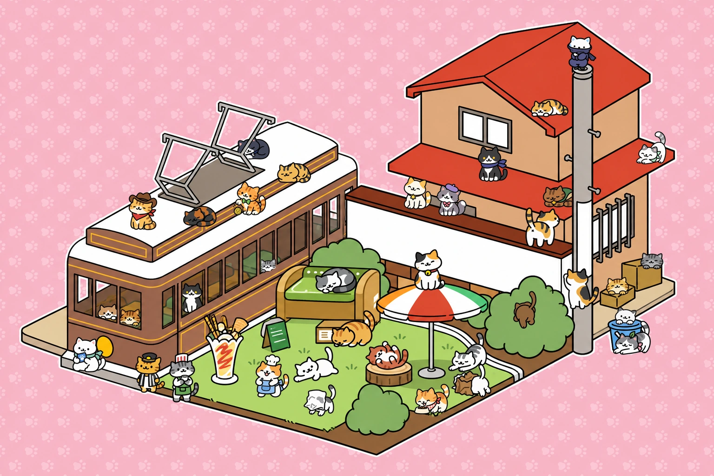
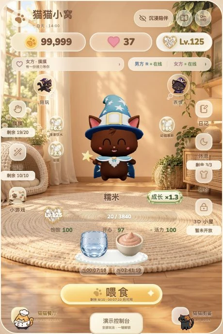
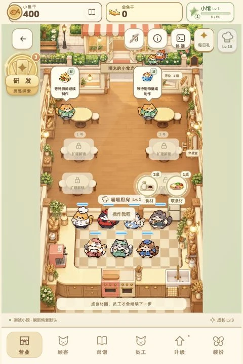
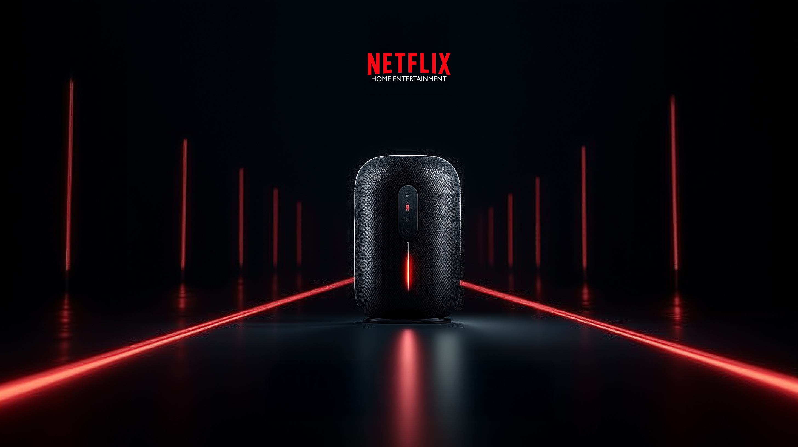
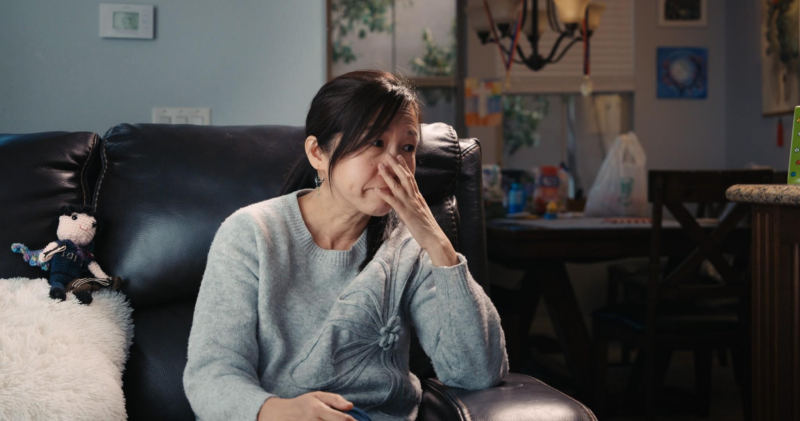

原始画面 ORIGINAL
细节增强 DLSS + RTX
高清待加载
WORKFLOW COMPARISON Seedance 2.5
重塑每一处细节
DLSS + RTX · Redefine Detail
本地生成 · 1080p → 4K
拖动查看细节 Drag to revealWORKFLOW COMPARISON Seedance 2.5
DLSS + RTX · Redefine Detail
本地生成 · 1080p → 4K
拖动查看细节 Drag to revealJourney to Another WorldSeedance 2.0
实拍入镜，AI 造境 Real Cinema to AI Video




纪录片 / 调色与声音 疗愈之翼Healing Wings 10/2024